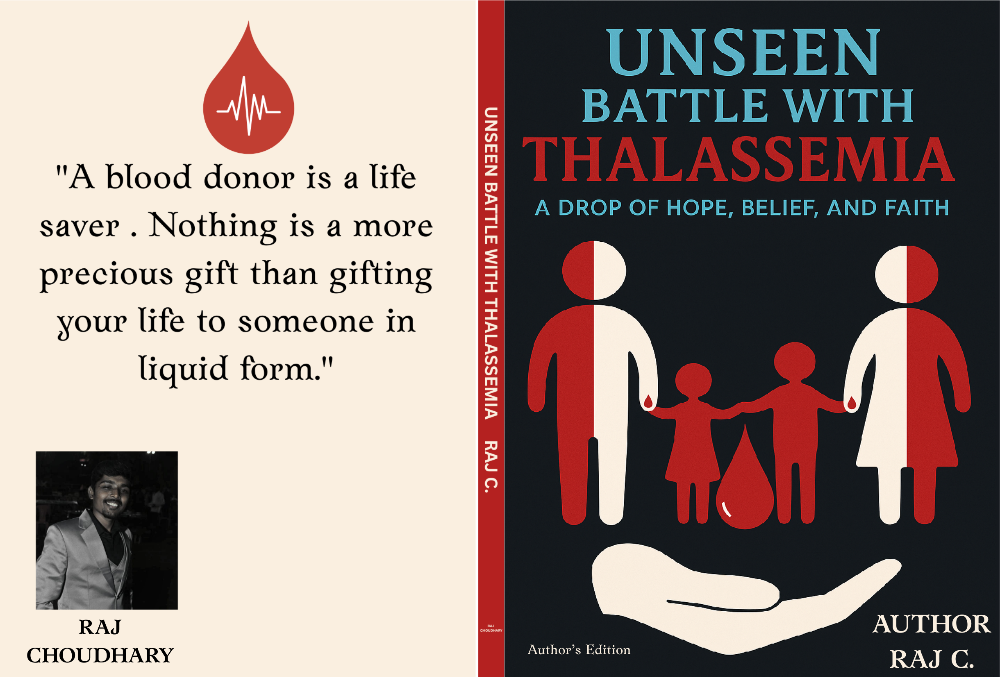
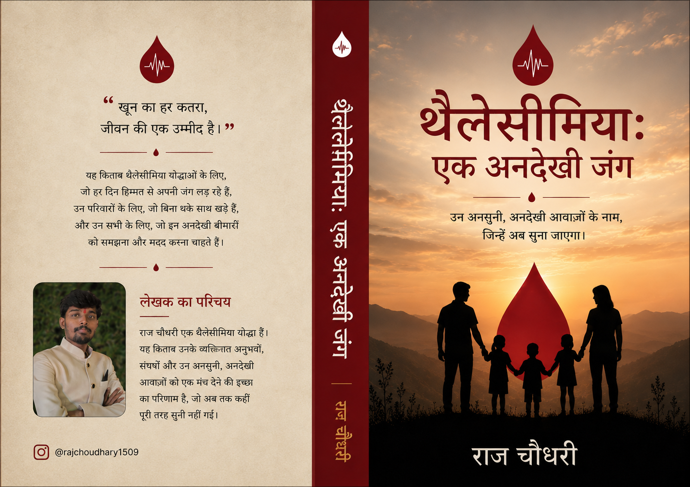

Raj Choudhary
Author | Thalassemia Warrior
Author | Thalassemia Warrior
Raj Choudhary is an emerging author whose writing is inspired by personal experiences, resilience, and the stories that often remain unheard. Through his books, he hopes to give a voice to unseen struggles and unheard emotions, creating a space where readers can find understanding, hope, and connection.

English Edition

Hindi Edition
My name is Raj Choudhary, and I am a thalassemia warrior, author, and someone who has learned to find strength in life's challenges.
Living with thalassemia since childhood has been a journey filled with hospital visits, blood transfusions, uncertainties, and countless obstacles. Yet, these experiences have also taught me resilience, patience, gratitude, and the importance of never giving up.
Writing was never just about telling a story for me—it became a way to express emotions, share experiences, and give a voice to struggles that often remain unseen.
Through my books, Thalassemia: Ek Undekhi Jung and Unseen Battle with Thalassemia, I aim to present an honest and heartfelt account of living with thalassemia while spreading awareness and hope.
My purpose is not only to share my journey but also to encourage voluntary blood donation and inspire people fighting their own unseen battles.
— Raj Choudhary